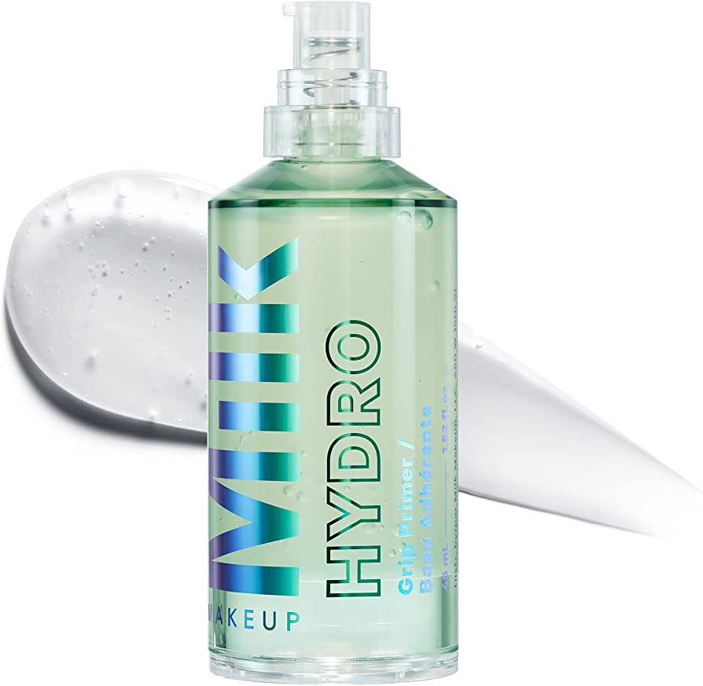
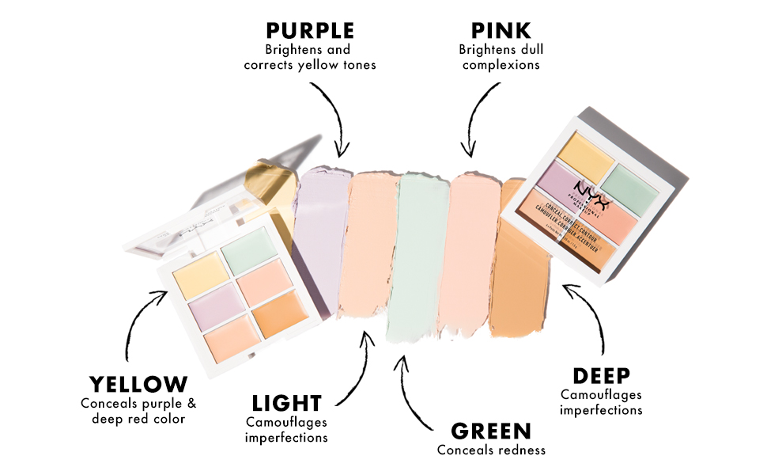
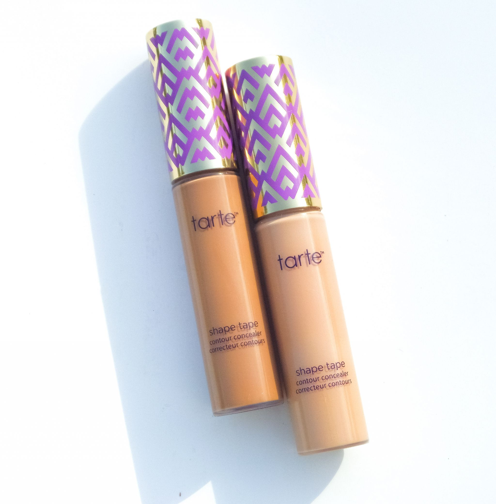
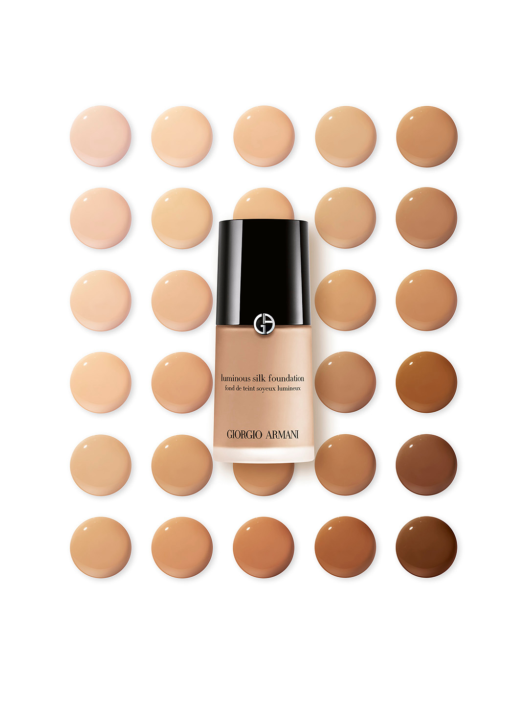
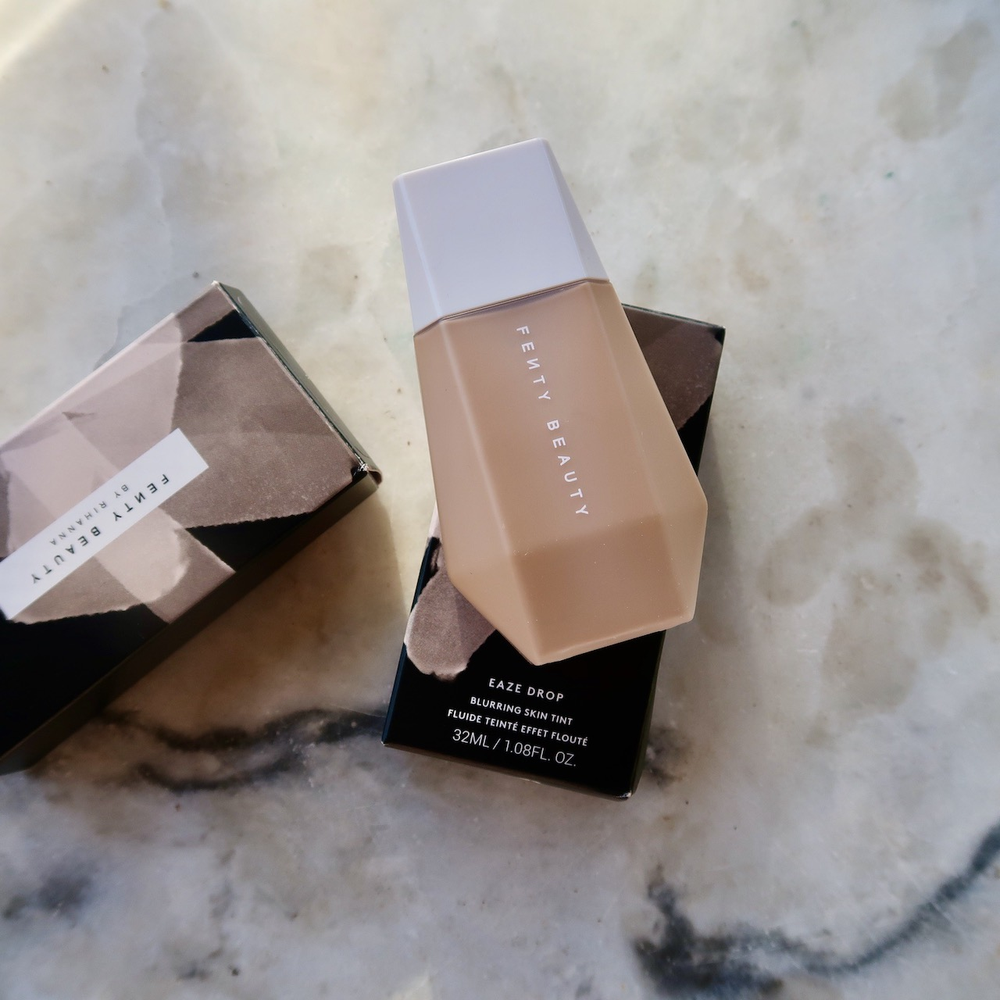
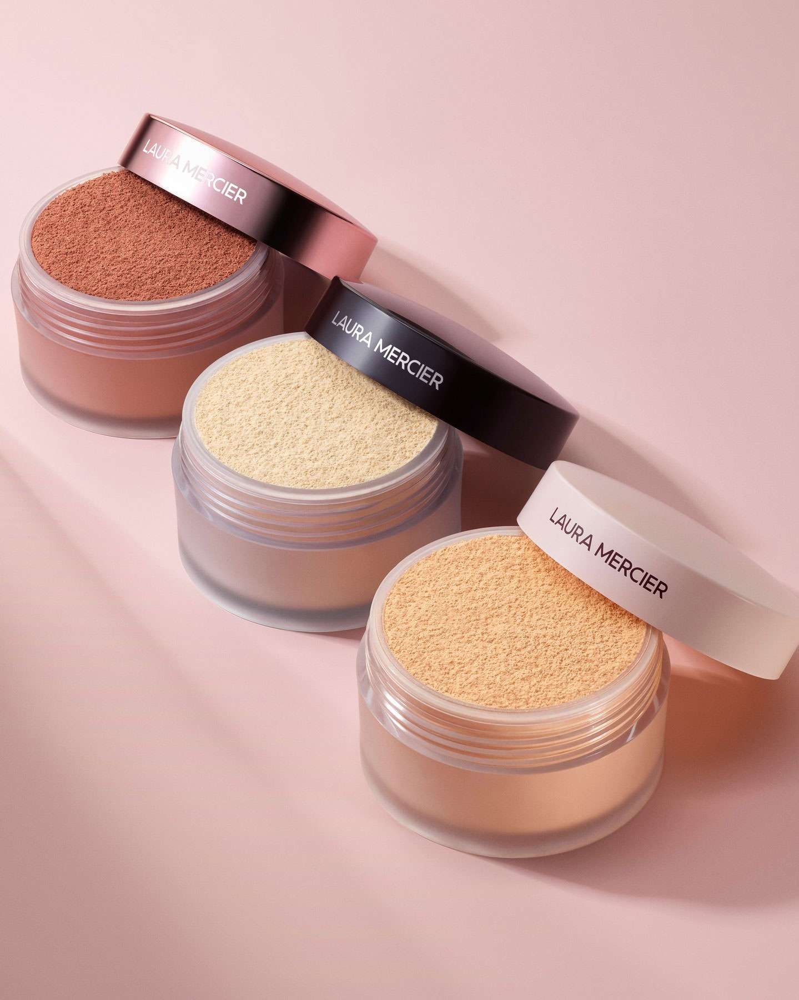
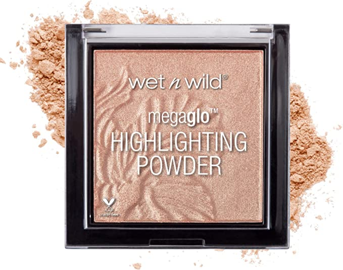
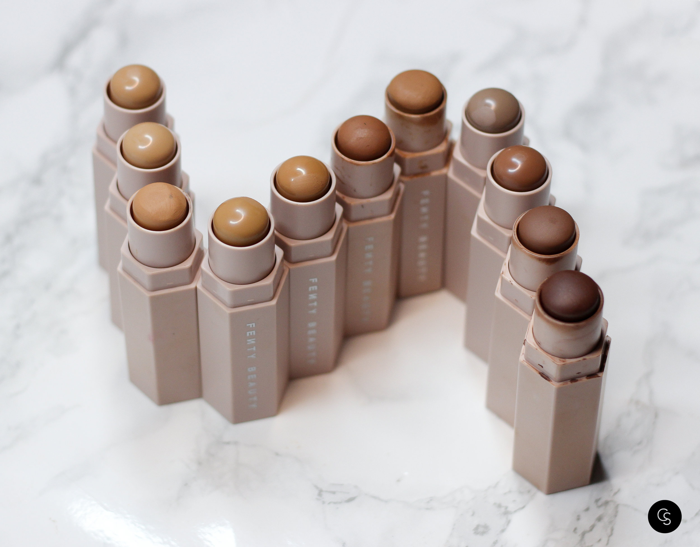
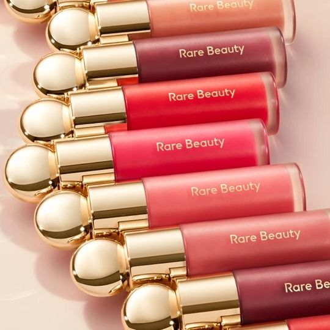
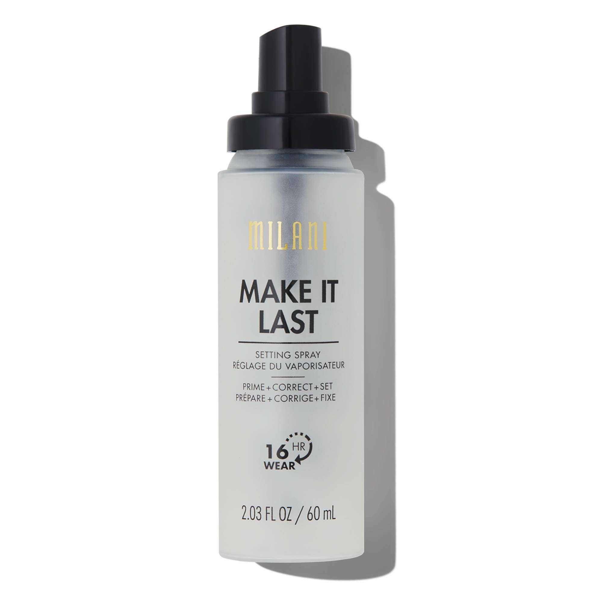

Used to help smoothen your face before applying any other products. Some products are formulated to be sticky. The
stickiness helps the products you put ontop stick and hold onto your face all day.
 Colour correctors come in a variety of colours. These come in light versions of green, pink, orange, yellow, purple, blue. They use colour theory to help cover up unwanted visible spots like pimples, hyperpigmentation and others. Using this, then concealer will help cover up with the most efficiency.
 Concealer is used to cover up dark spots like eyebags, and pimples too. However this is different from colour correctors. Concealer matches the skintone to cover up.
 Foundation is after concealing spots. This helps even out the entire face’s skintone to be one. Foundation is one of the most used products. They come in bottles of liquid foundation, as a powder, or even in a compact foundation cushion for on the go.
 BB/CC cream or skintints are similar to foundation. However, these are often much more sheer, and are used to keep the skin more moisturized, while evening out the skin.
 Setting powder comes in a variety of options. We have loose powder, pressed powder, etc. Setting powder can be used in many different ways. Often, it is used to “set” your makeup in place so it doesnt come off. Another use is to blot it on your face so that your face is less oily.
 Highlighter is not always used, however it can enhance many features of your face. Highlighter has no designated place on the face, however most people apply it on the inner corner of their eyes, cheekbones, use it on their eyes, and on their nose. Highlighter is made up of shiny pigments. The brightness of this highlights these features.
 Contour is another product that isn't always used, however like highlighter it can enhance your features. It contours your face as the name suggests and can sharper your face and features. It may look intimidating, but once you find the perfect shade and type of contour everything will work out.
 Blush is used to pinken the face. The pink adds liveliness back to your face after using foundation. There are many placements for blush, however anywhere on the cheeks is the most common. Finding a suitable shade to blush is key to not looking like a clown. If your skintone is more fair, try a lighter pink.
 Setting spray locks everything into your face. Applied after the base makeup and after all your makeup is completed helps keep your makeup on for long periods of time. Some setting sprays can even help make your makeup last up to 24 hours! They are often moisturizing to the face, so that your makeup doesn't dry out, while it stays put.